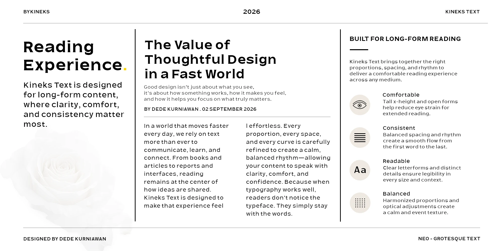
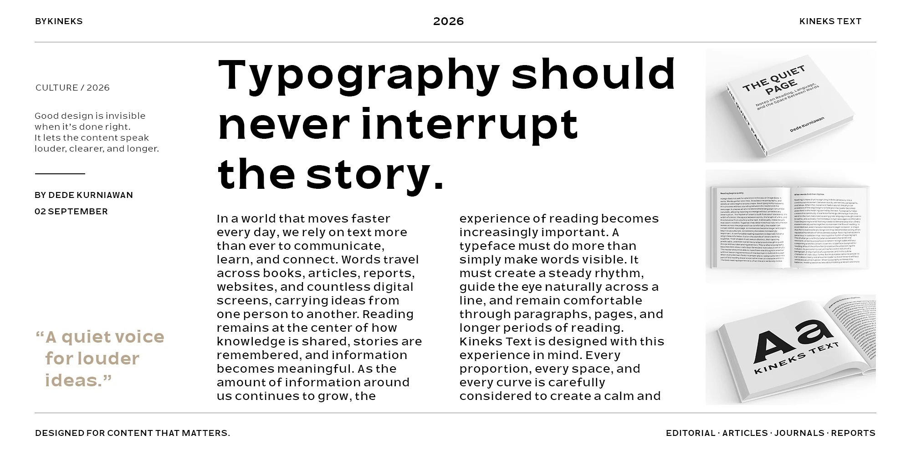
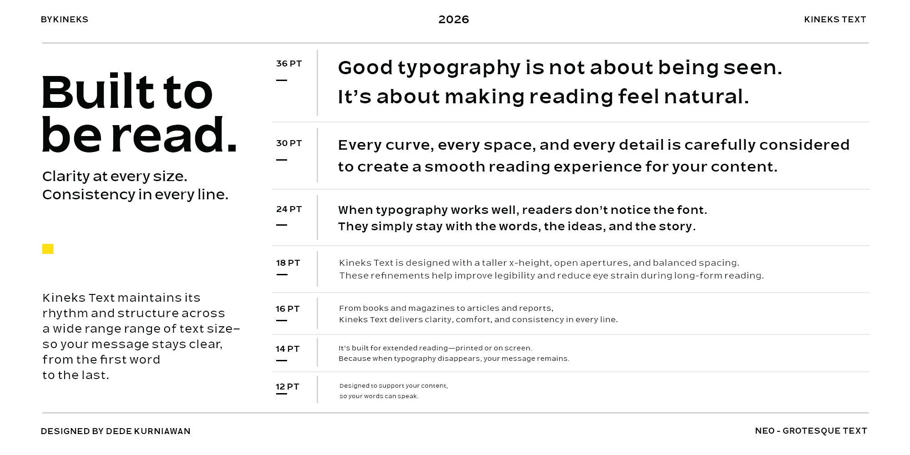
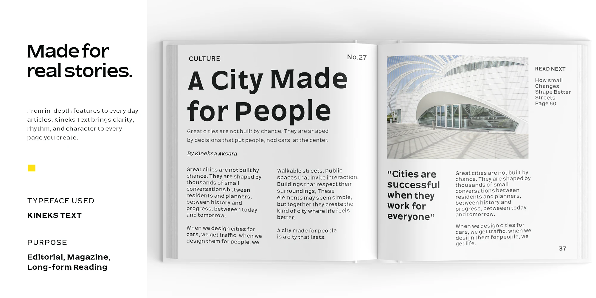
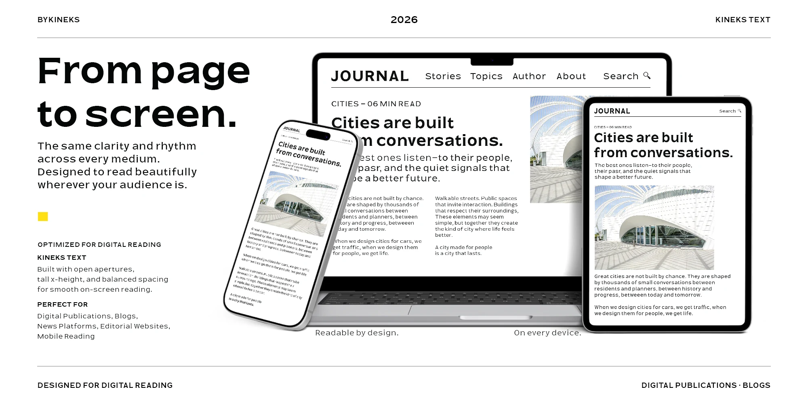
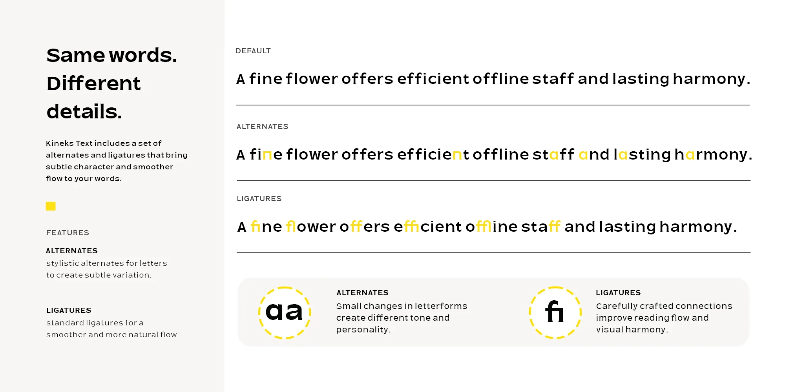
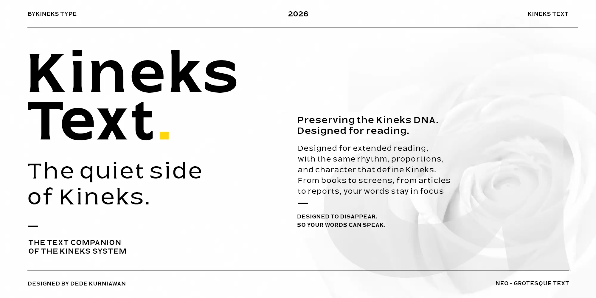

12 pt · Extended reading
A quiet voice for your words.
A clear line of type gives a story room to breathe. From one sentence to the next, spacing and rhythm guide the reader through the page.
A steady rhythm. From the first word to the last.
Kineks Text is a neo-grotesque variable sans serif by Dede Kurniawan and BYKINEKS, designed for books, magazines, articles and digital publications.
A generous x-height, open apertures, balanced proportions and carefully tuned spacing give long-form content a steady reading rhythm.
Ten styles span Light to Bold, with Upright and Oblique. The variable font offers continuous weight (300–700) and slant (0–12), alongside alternate letterforms and standard ligatures.
Choose Kineks Text for sustained reading. For compact interface labels, navigation and dense information, explore Kineks Compact.
Edit your own text. Weight, style and OpenType changes preserve your words. Alternate set 1 affects A, n and y; set 2 affects a and n.
A clear line of type gives a story room to breathe. From one sentence to the next, spacing and rhythm guide the reader through the page.
Every paragraph carries an idea forward. A considered hierarchy helps the reader follow its direction without interrupting the flow.
Words move between books, articles and digital publications. Give them a consistent voice across the places where people read.






Encoded visible characters and verified ligature sequences from Kineks Text. The study uses Regular, upright.

Explore licensing and the Kineks Text family.